Trabajamos directamente con cachorros de clientes que crían con responsabilidad y amor
Para que tu nuevo integrante llegue en óptimas condiciones a su nuevo hogar
ContáctanosNo somos un criadero, somos un centro de adiestramiento canino.. Con diversos servicios:
Entrenamiento básicos y avanzado
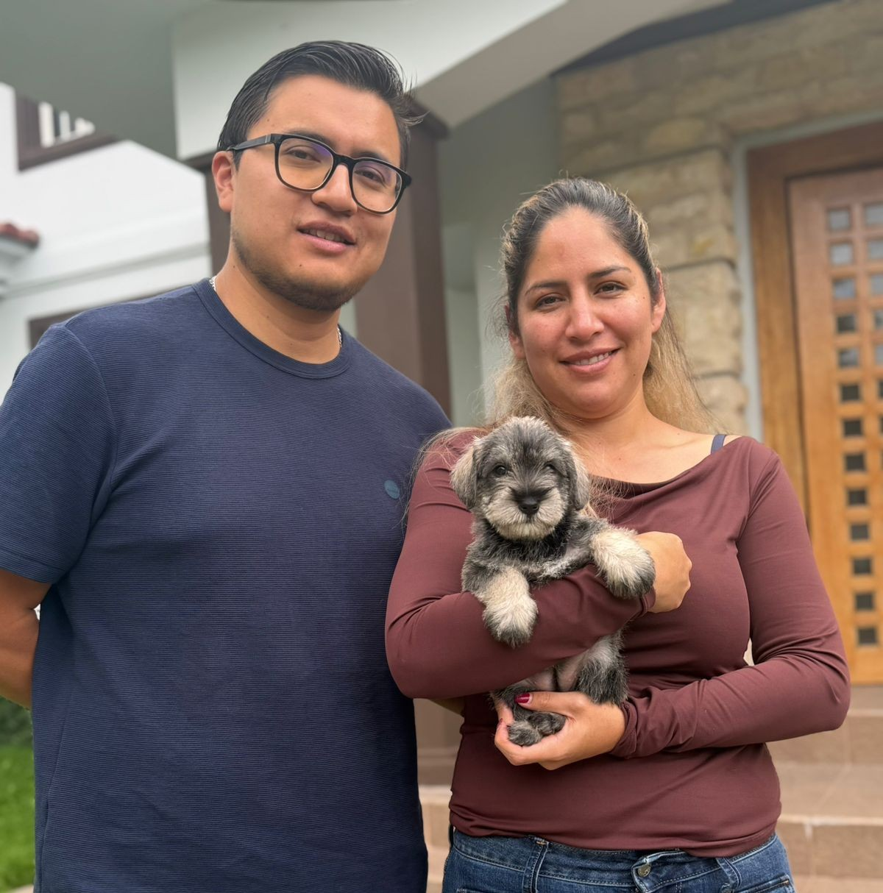
El cachorro es entrenado para que conviva de una manera sana con sus seres queridos y adicional trucos simples.
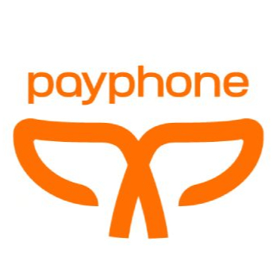
Peluquería canina🐩
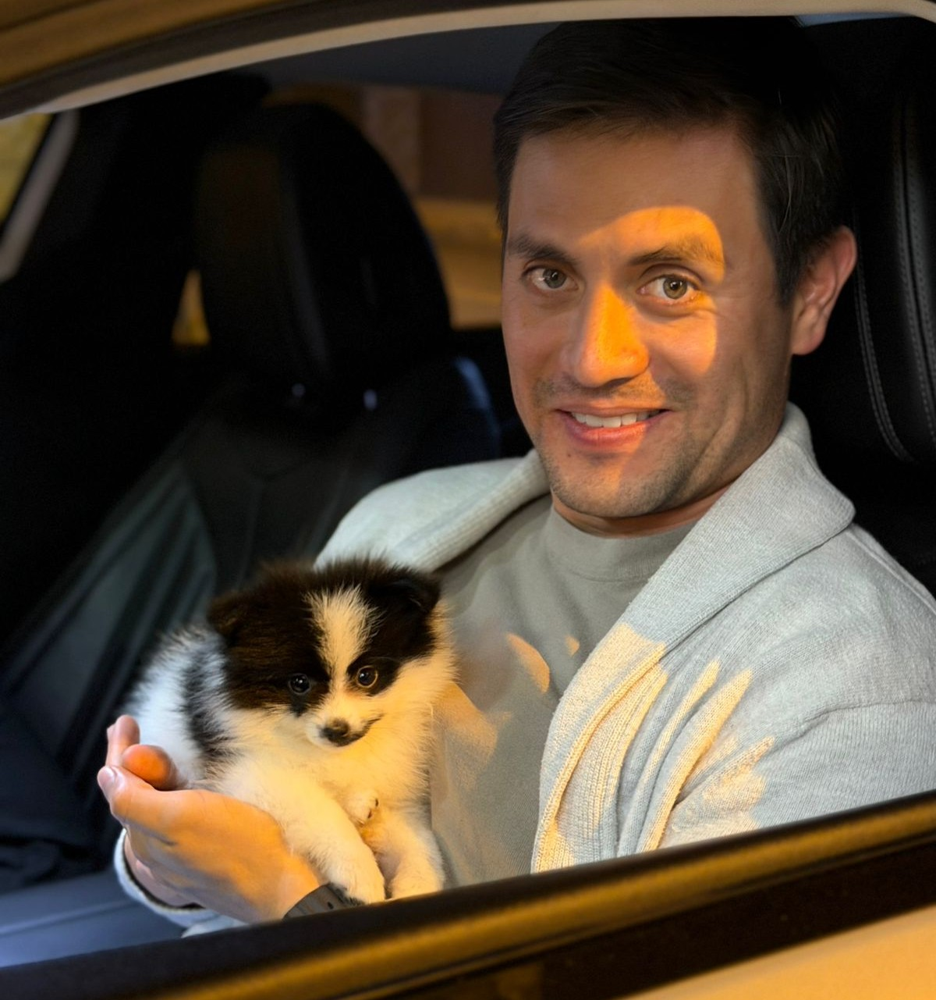
Incluye todo el paquete estético para tu canino
Asesoramiento sobre cachorros 📝
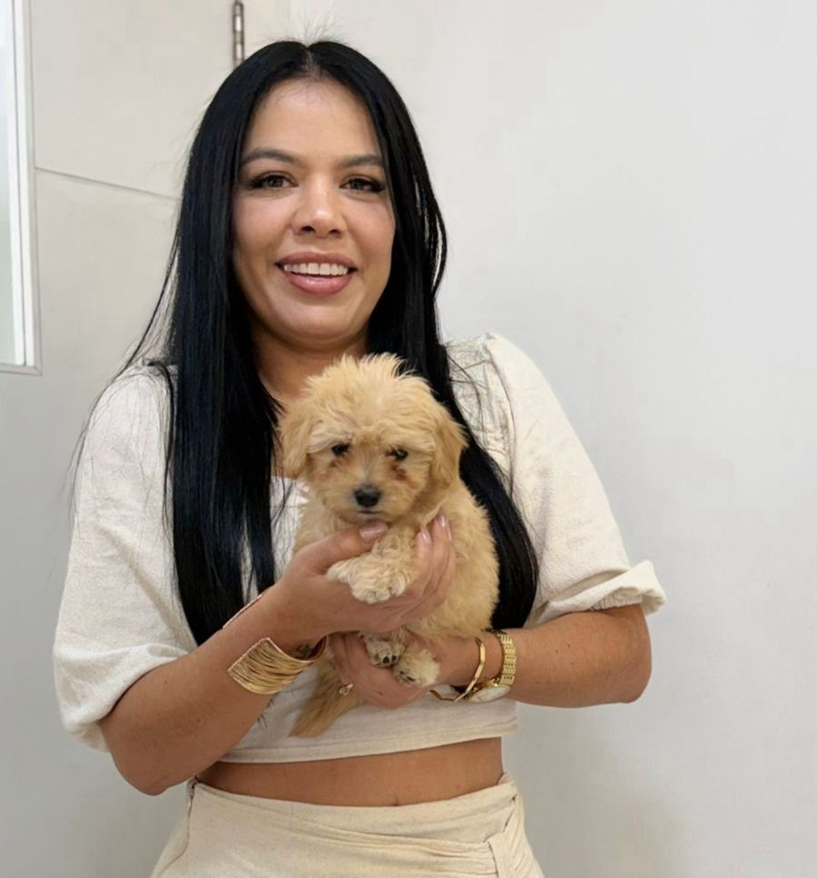
Estamos 24/7 para cualquier información que necesites sobre los cachorros y contamos con una atención excelente.
Fotografias caninas 📸
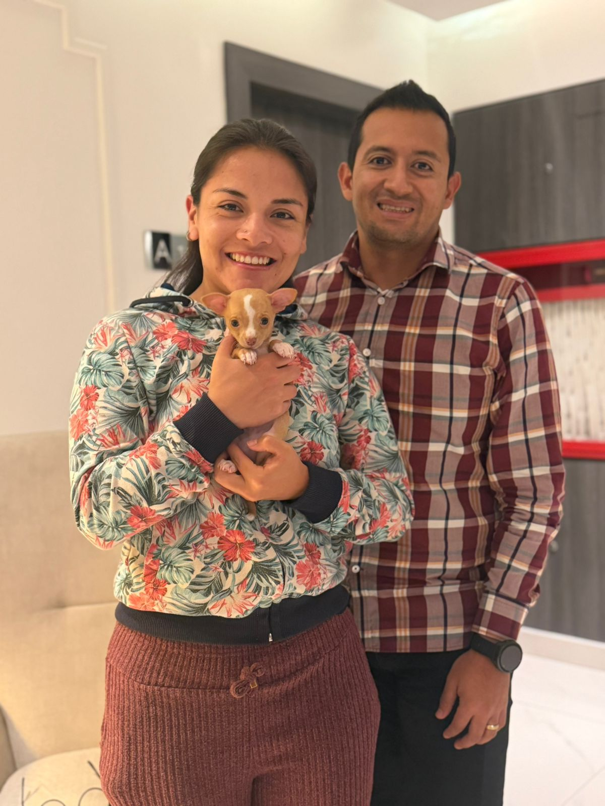
Tomamos fotos con una cámara profesional teniendo en cuenta las técnicas.
Traslados Nacionales e Internacionales, puerta a puerta 🚪
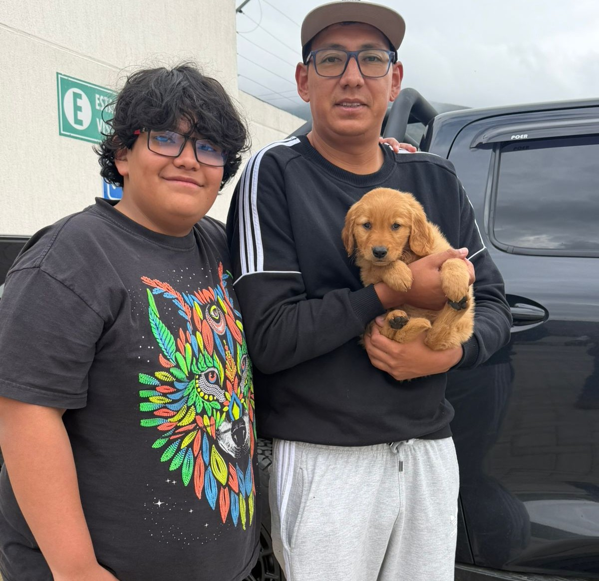
Llevamos tu cachorro hasta tu hogar, en un viaje confiable, cómodo y seguro totalmente.
Estamos felices de ayudarte
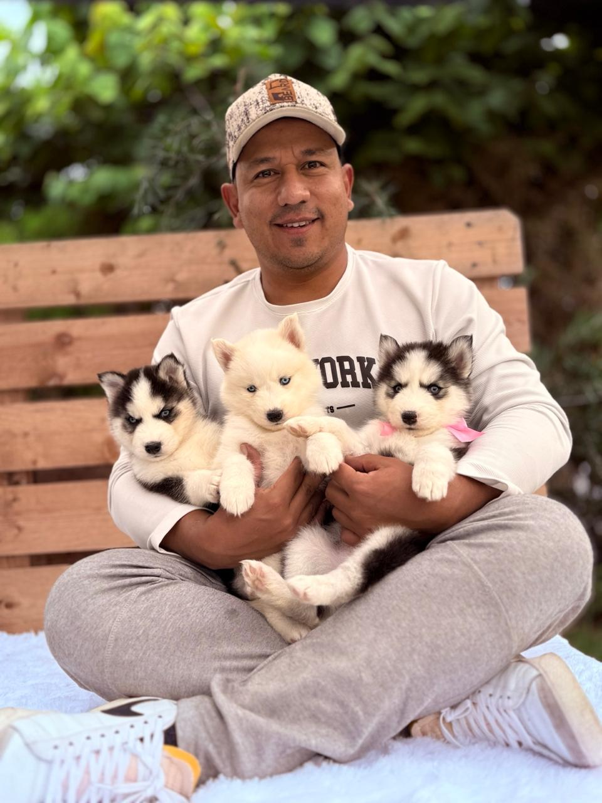
Nosotros iniciamos con un pequeño sueño y unas diminutas huellas las cuales no es nada a comparación de lo que hemos crecido, nos costó años de experiencia, pérdidas, tristezas, pero nuestro Dios siempre nos motivó para pensar en grande sin negativismo, por ello los tomamos como no solo una empresa sino un lugar que se encarga de cuidar y de encontrar un hogar para estos amigos fieles e inseparables.
VISIÓN
"Ser el referente en bienestar animal y conexión familiar, reconocidos por nuestra transparencia, servicio personalizado y por construir relaciones duraderas basadas en la confianza y el amor por los animales."
MISIÓN
"Facilitar el camino hacia la mascota perfecta. Ofrecemos un servicio integral de asesoramiento, selección y seguimiento, asegurando que cada cachorro y gatito encuentre un hogar donde recibir amor y cuidado para toda la vida."
Estamos para brindarte un servicio de calidad y excelencia a ti como también a tu mascota.
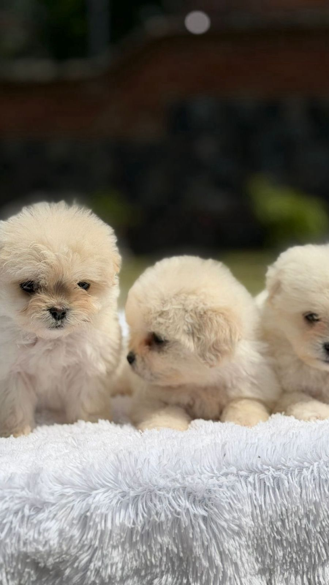
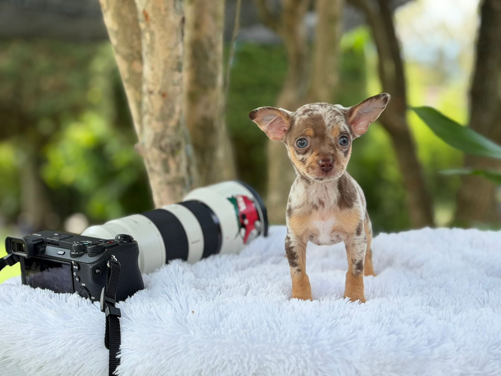
Entrenando con compasión y Compromiso
Nuestro propósito es asesorarte para que tengas a tu compañero de vida, con las características determinadas a tu día a día y entorno familiar.🐾
¿Qué dicen nuestros clientes?
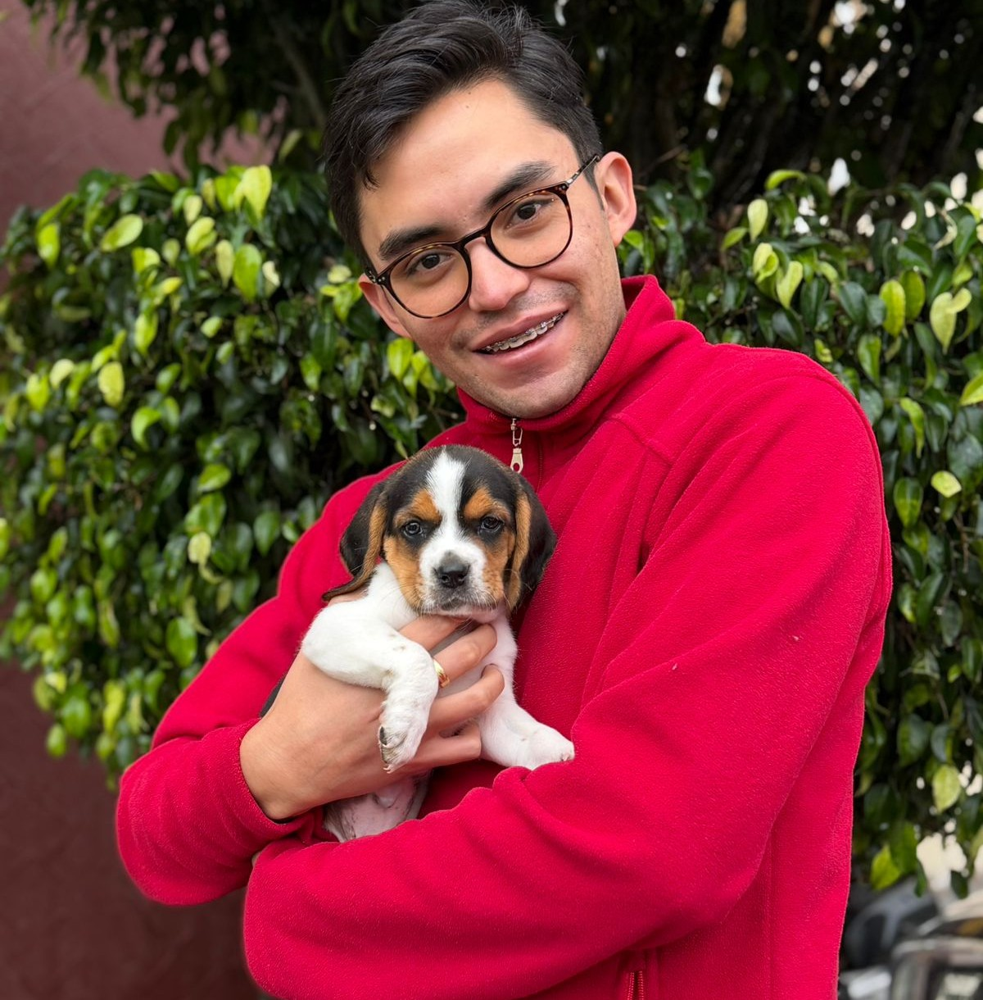
José D."Mi familia está encantada con su servicio 24/7 cuando los necesitamos."
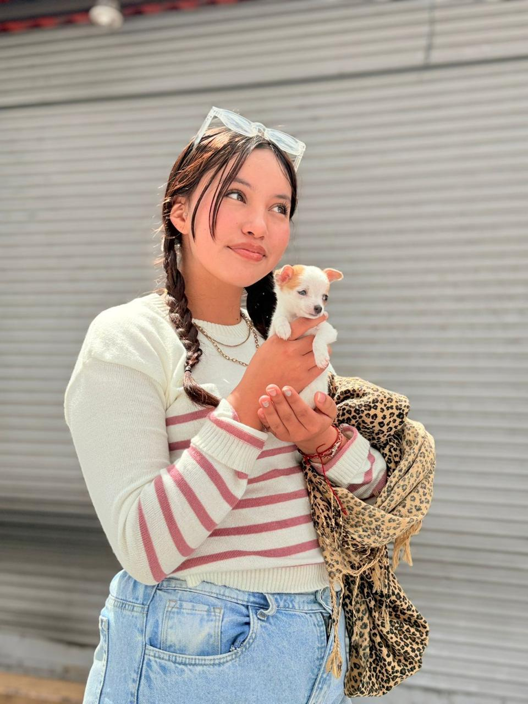
Jimena F."Estoy contenta con la llegada de mi alma gemela y con el cuidado respectivo que tuvo."
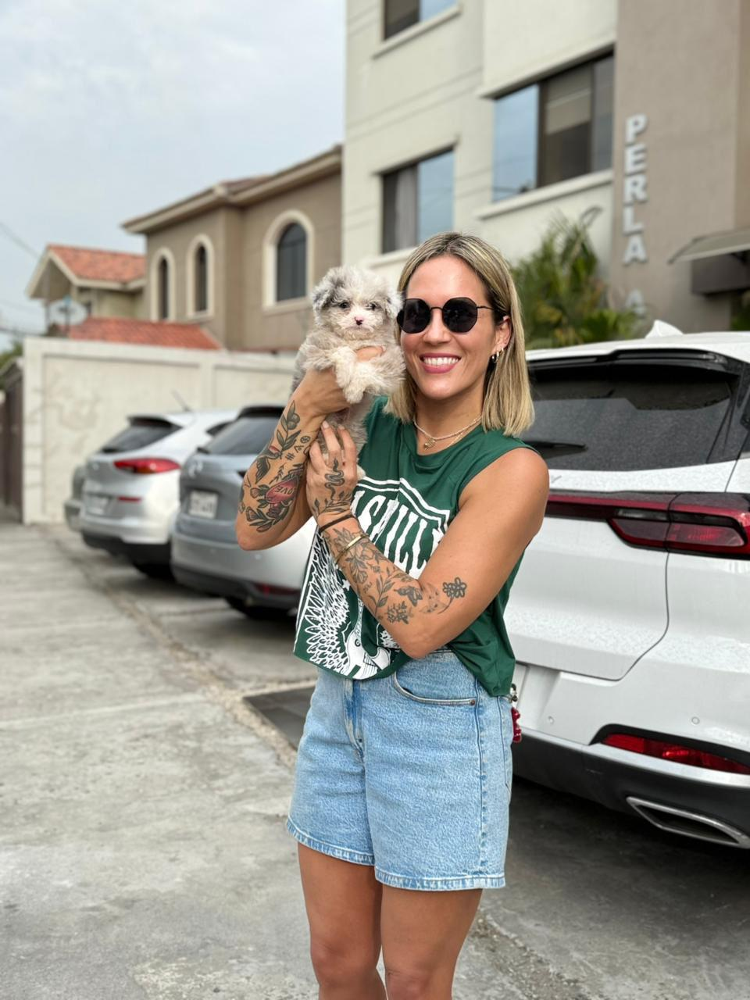
Dayana H."Gracias por entrenar a mi cachorro, cuando está solo en casa se comporta bien."
Tus preguntas, Respondidas
Preguntas frecuentes
En Willin Mascotas, la salud es nuestra prioridad. Todos nuestros animales cuentan con un certificado de salud vigente expedido por un veterinario certificado, su esquema de vacunación correspondiente a su edad y un tratamiento de desparasitación reciente. Te entregaremos toda la documentación para tu tranquilidad.
¡Por supuesto! Nuestro compromiso es de por vida. Ofrecemos un seguimiento continúo para resolver tus dudas sobre alimentación, adaptación, entrenamiento básico o cuidado general. Estamos contigo en cada paso.
Nuestro compromiso es conectar mascotas con familias ideales, fomentando vínculos para toda la vida.
Nuestro trabajo no termina con la entrega: cuidamos la salud de cada mascota y te acompañamos en cada etapa de esta nueva historia.
Puedes contactarnos para una asesoría gratuita donde conoceremos tus expectativas y te presentaremos a los candidatos ideales según tu estilo de vida.
Comentarios
Obtuvo 0 de 5 estrellas.
Aún no hay calificaciones

Comparte lo que piensas
Sé el primero en escribir un comentario.